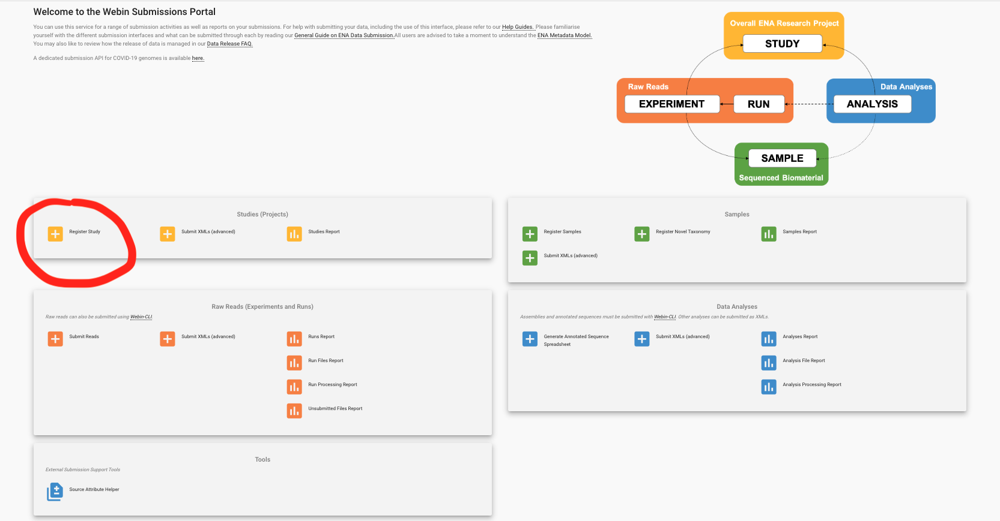
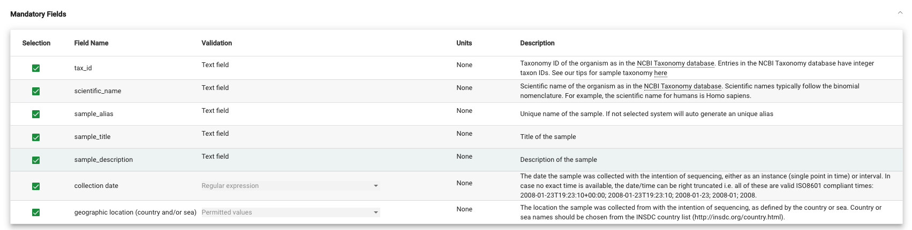
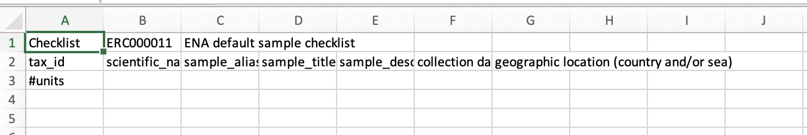
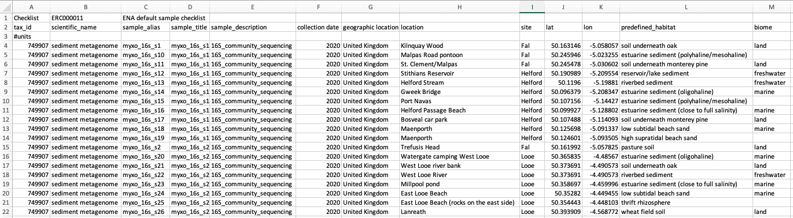
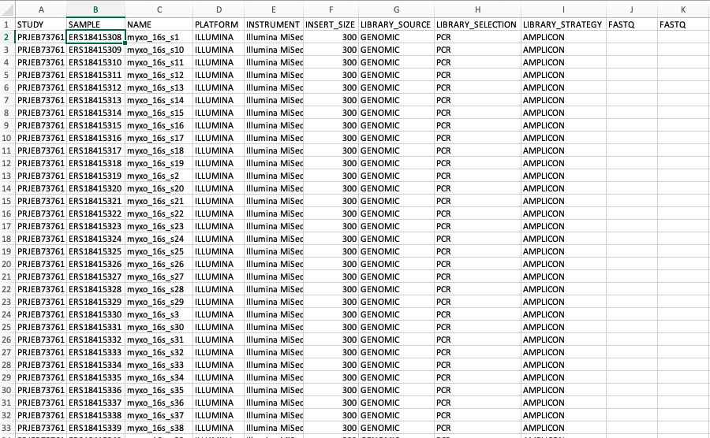
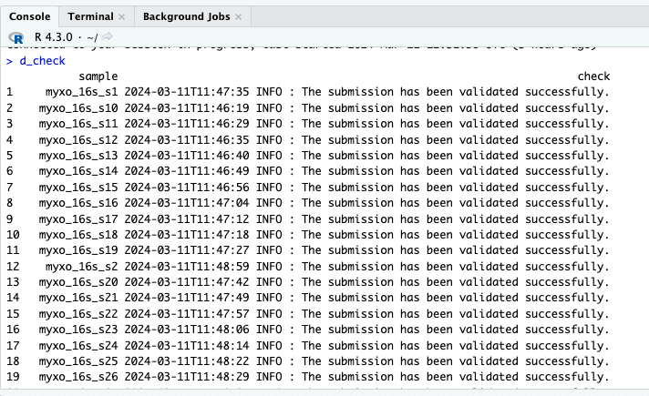

# create single manifest file for each sample from a sample metadata file
# load in tidyverse
library(tidyverse)
# read in sample metadata column
files <- read.csv('ena_submission/sample_metadata.csv') %>%
# make numeric columns character so that pivot longer works
mutate(across(where(is.numeric), as.character))
# create single manifest file for each row
# run a for loop
for(i in 1:nrow(files)){
# grab the file name from the NAME row (third element)
file_name <- temp$value[3]
# rename the fastq columns FASTQ
temp$name[10:11] <- 'FASTQ'
temp <- temp[1:11,]
# name the fastq files R1 and R2 and the file name
temp$value[10] <- paste(file_name, '_R1.fastq.gz', sep = '')
temp$value[11] <- paste(file_name, '_R2.fastq.gz', sep = '')
# save it out
# need to create a folder for your manifest files
write.table(temp, paste('manifest_files/', file_name, '.txt', sep = ''), row.names = FALSE, col.names = FALSE, quote = FALSE)
}Introduction
The European Nucleotide Archive (ENA) provides a comprehensive record of the world’s nucleotide sequencing information, covering raw sequencing data, sequence assembly information and functional annotation. I always find it so painful to submit to ENA. I do it so rarely (maybe once or twice a year) that by the time I come to do it again, I have forgotten how to do it. The ENA documentation is quite good, but it is not always clear what you need to do. I have written this post to help me remember how to submit files using the Webin-CLI software and hopefully help others who are in a similar position.
So I assume that you have stumbled across this post in a similar position: you have a bunch of sequencing data you want to submit to ENA. Throughout this post, I will reference the online documentation provided by the ENA, and you will need to signup to the interactive Webin submission service and download the Webin command line submission interface (Webin-CLI).
Overall the process for submitting sequencing files can be summarised as:
- Register a study (interactive online)
- Register samples (interactive online and using Excel)
- Create sample metadata (using Excel)
- Make individual manifest files for each sample (I use R)
- Rename files if needed (I use R)
- Submit samples (using bash and Webin-CLI)
Submitting files to ENA
We will go through each one to summarise the main steps and things I often get wrong.
1. Register study using the interactive interface
The first thing to do is to register your study. This is easiest to do interactively on the Webin Submissions Portal and the ENA have a help page on this here. The Register Study link is currently found towards the top left of the page.

This is the easiest bit of the process and probably the only part that doesn’t take me several attempts. If submitting sequences from a study that is nearing publication, you can enter the study title and the abstract. The release date of the study is when all the sequences will become public. I generally put this for a week after I started the process to allow me to make many mistakes, but post submission you can always bring this date forward. Citations can be added at a later date, so it is possible to submit sequencing before the work is published.
Make a note of the Accession Number for your study as it will be used later (should start with PRJEB).
2. Register samples using the interactive interface
A sample is sequenced biomaterial, and we need to register samples to make sure each sample has metadata associated with it. Samples are associated with checklists, which define the fields used to annotate the samples. The ENA help page for this is quite good.
When using the interactive submission portal, you need to click through to Register Samples and then click Download spreadsheet to register samples. There are many different standardised sheets to choose from which should help provide consistent metadata that will allow for better reporting of datasets in the future.
However, as most of the sequencing I upload are from bespoke, controlled experiments in the lab, I have generally only used the ENA default sample checklist which is within Other Checklists There are some fields that are mandatory for that checklist. What they are, and their definition is displayed after you have clicked on your checklist.

If there are extra fields you want to add, then add them, otherwise click Next and click Download Template Spreadsheet, which will download a .tsv file that contains the minimum required fields for the ENA sample register. When opened in Excel (the horror), this will look something like this.

You can then fill out your samples checklist. There is some key advice from the ENA documentation when filling out this spreadsheet:
- Do not remove or modify, the first three lines of the spreadsheet, which specify the checklist in use, field names, and units row.
- Enter data in row 4 of the spreadsheet onwards. Use row 3 (#units) to specify units where required by the checklist.
- You can add custom fields by inserting new column headers
- Do not edit the existing column names
From doing this a few times, I have my own advice for future me that past me learned the hard way:
- Every sample is always associated with a taxon, which is inputted into the tax_id column and then the scientific_name column. I use the NCBI taxonomy browser to find the correct taxon. For example, sediment metagenome has the taxonomy ID of 749907.
- When inputting numbers into Excel, when you double click them to go autofill, they often follow a numeric rule (x+1) or something. Copy and paste the same number into the cell below, and then double click them both to autofill and this does not happen.
- Each sample needs to have its each individual row. The sample_alias column needs to be a unique identifier to identify that sample. It is unique to ALL future submissions too so make sure you label them in relation to the study AND the sample. For example for a recent project on Myxobacteria I started all of them with myxo_16s_s1 or myxo_rpoB_1 etc. All the other columns are relative self explanatory. You can also add metadata columns. An example completed file - saved as a
.txt\might look something like this. - I generally have the same name for the sample_title as I do for the sample_alias.
- In the sample_description column, I generally put what sequencing was done.
- For most studies, I also add extra columns that are unique to the study and represent treatments and extra data that is interesting and needed to best understand the files. For example, I added columns about what predefined habitat the samples came from and what biome the sample was classified as. I also added metadata collected by a collaborator on where the sample was taken and the latitude and longitude.
My most recent sample checklist looked like this:

Once completed, this file can be uploaded to the ENA interactive web portal by clicking Register Samples -> Upload filled spreadsheet to register samples and then Submit Completed Spreadsheet after you have chosen your file. The portal will tell you if you are successful which means you can move on to the next stage.
3. Create sample metadata
After doing steps 1 and 2, you should receive emails containing the Accession Numbers of your experiment and of your samples. These need to be included in a manifest file that is required for the submission of each sample to ENA. Details on the manifest file can be found here.
The information needed for each sample may change based on what files are being uploaded. For paired end fastq reads, they are generally:
- STUDY: Study Accession Number, from Step 1.
- SAMPLE: Sample Accession Number, from Step 2.
- NAME: Experiment name, which I generally use the same as the sample_alias.
- PLATFORM: Sequencing platform
- INSTRUMENT: Sequencing instrument
- INSERT_SIZE: Size of the sequence is the length of the sequence between the adapter sequences.
- LIBRARY_SOURCE: What type of information was sequenced? DNA, RNA, etc.
- LIBRARY_SELECTION: Library selection. What selection was done on the DNA? PCR, random, etc.
- LIBRARY_STRATEGY: Library strategy. What type of sequencing stratedy was done? WGS, RNA-Seq, etc.
- FASTQ: File name of forward fastq file
- FASTQ: File name of reverse fastq file
I generally create another Excel file, with these values as column names, where I document all the samples from a study. I call this sample_metadata.csv, and my most recent one looks like this.

I leave the fastq columns blank because I am going to rename the files before uploading to be the same as the sample_alias.
4. Create manifest files for each sample
Each sample needs its own manifest file, so I use R to create manifest files from the sample_metadata.csv file. We want to make a manifest file for each row of the spreadsheet.
To reiterate, I try to use the sample_alias as a unique ID for each manifest file and fastq file linked to the that sample. So I will name each manifest file as the sample_alias.txt, and then rename the fastq files to be the same as the sample_alias_R1/R2.fastq.gz.
Example code to do this could be:
This should result in you having a unique manifest file for each of your samples that you registered.
5. Submit samples
Once you have your manifest files, you can submit them to ENA. However, it is likely that before you do this you may need to rename your files to match the names you specified in the FASTQ values of each manifest file. This is because the manifest file will be looking for files with those names in the directory where you specify the fastq files are.
So I have started creating a new folder called ena_upload where I copy and rename the samples to for ena submission. These can then be deleted after submission is successful.
I do file renaming in R, and this is likely to be bespoke for each project and how you have named your sample aliases. An example of what this might look like is:
# rename files for ena upload
# list manifest files names
manifest_files <- list.files('manifest_files', full.names = TRUE)
# list the sequencing files to rename
files <- list.files('where_the_raw_files_live', full.names = TRUE, pattern = 'fastq|fq', recursive = TRUE)
# write for loop ro rename files
for(i in 1:length(manifest_files)){
# grab the ith manifest fuke
temp <- manifest_files[i]
# remove file extension
temp <- tools::file_path_sans_ext(temp)
# in this example, the sample identifier is the s1 part, so I will grab that
# this bit needs to allow you to find the sequencing files - given the current naming - that relate to that manifest file
temp_num <- str_split(temp, '_')[[1]][3]
# find the sequencing files that link to that manifest file
files_temp <- files[str_detect(basename(files), paste(temp_num, '_', sep = ''))]
# rename files for ena upload
# for R1 file
file.copy(files_temp[str_detect(basename(files_temp), 'R1')], paste('~/ena_upload/', temp, '_R1.fastq.gz', sep = ''))
# for R2 file
file.copy(files_temp[str_detect(basename(files_temp), 'R2')], paste('~/ena_upload/', temp, '_R2.fastq.gz', sep = ''))
}This should result in the sequencing files being renamed to match the names specified in the manifest files. We should then be able to upload them to ENA. I use the ENA webin-cli tool to do this. You can find the documentation for this tool here.
We can now run Webin-cli to submit our samples. We will start by validating our submission to check no terrible errors have occurred.
# submitting files to ENA
# check webin-CLI is working
# download latest version from https://github.com/enasequence/webin-cli/releases
wget https://github.com/enasequence/webin-cli/releases/download/7.0.1/webin-cli-7.0.1.jar
# check it exists
ls
# check it is working
java -jar webin-cli-7.0.1.jar -version
# seems to be working
# open a screen
screen -ls # check what screen exist
screen -S ena # start a new screen called ena
# screen -r ena # reopen the screen
#screen -X -S ena quit # you want to kill the screen
# validate each file submission
# path to raw renamed sequencing files
fastq_files=~/ena_upload
# path to manifest files
manifest_files=~/manifest_files
# create a manifest output folder
mkdir -p $manifest_files/output
manifest_output=$manifest_files/output
# run a test
file=$manifest_files/myxo_16s_s1.txt
# run a for loop to submit sequencing files
for file in $manifest_files/*.txt
do
# cat the file
echo $file
# grab the file name without the extension
stub=$(basename ${file%.txt})
man_file=$file
# make a folder for the output of the validation
mkdir -p $manifest_output/$stub
# run webin-cli - run validation to check
java -jar webin-cli-7.0.1.jar -validate -context reads -manifest $man_file -inputDir $fastq_files -outputDir $manifest_output/$stub -username your_username -password your_password
doneAfter this has ran, you can check the output of all the validation files. If there are no errors, you can then submit the files to ENA. This can be done quite simply in R.
# check validation reports
# list validation folders
validation_folders <- list.files('~/manifest_files/output', full.names = TRUE)
# setup empty dataframe to populate
d_check <- data.frame(sample = basename(validation_folders),
check = NA,
fullname = validation_folders)
# run a for loop to grab the output of the validation report for each sample
for(i in 1:nrow(d_check)){
# read file in
temp <- readLines(file.path(d_check$fullname[i], 'webin-cli.report'))
# input it into the correct place in the dataframe
d_check$check[i] <- temp[length(temp)]
}
# drop the full name column
d_check <- select(d_check, -fullname)
d_checkMy most recent one of these looks like this:

We can then run the submission for realsies!
# run a for loop to submit sequencing files
for file in $manifest_files/*.txt
do
# cat the file
echo $file
# grab the file name without the extension
stub=$(basename ${file%.txt})
man_file=$file
# run webin-cli
java -jar webin-cli-7.0.1.jar -submit -context reads -manifest $man_file -inputDir $fastq_files -outputDir $manifest_output/$stub -username your_username -password your_password
doneWith any luck, these files should then be viewable the Samples Report section of the ENA Web Portal.
Conclusion
I hope you have enjoyed reading this word vomit of a blog post about submitting to ENA. I hope it is useful to someone. Future me at the very least will be grateful for it. If you have any questions, please feel free to get in touch.
Extras
Permitted values for platform of a manifest file
- BGISEQ: Sequencers based on DNBSEQ by MGI Tech.
- CAPILLARY: Sequencers based on capillary electrophoresis technology manufactured by LifeTech (formerly Applied BioSciences).
- DNBSEQ: Uses DNA nanoballs(DNB) and regular array chips.
- ELEMENT: Element Biosciences uses avidity sequencing: a polymerase inserts nucleotides, detected using fluorescence.
- HELICOS: Helicos is similar to 454 technology - uses 1-color sequential flows.
- ILLUMINA: 54 technology use 1-color sequential flows: 454 technology use 1-color sequential flows.
- ION_TORRENT: Ion Torrent Personal Genome Machine (PGM) from Life Technologies. Directly translates chemically encoded information (A, C, G, T) into digital on semiconductor chip.
- LS454: 454 technology use 1-color sequential flows.
- OXFORD_NANOPORE: Oxford Nanopore platform type. nanopore-based electronic single molecule analysis.
- PACBIO_SMRT: PacificBiosciences platform type for the single molecule real time (SMRT) technology.
- ULTIMA: Ultima Genomics platform type. Flowing one nucleotide at a time in order, iteratively.
Permitted value for instrument of a manifest file
- 454 GS
- 454 GS 20
- 454 GS FLX
- 454 GS FLX Titanium
- 454 GS FLX+
- 454 GS Junior
- AB 310 Genetic Analyzer
- AB 3130 Genetic Analyzer
- AB 3130xL Genetic Analyzer
- AB 3500 Genetic Analyzer
- AB 3500xL Genetic Analyzer
- AB 3730 Genetic Analyzer
- AB 3730xL Genetic Analyzer
- AB 5500 Genetic Analyzer
- AB 5500xl Genetic Analyzer
- AB 5500xl-W Genetic Analysis System
- BGISEQ-50
- BGISEQ-500
- DNBSEQ-G400
- DNBSEQ-G400 FAST
- DNBSEQ-G50
- DNBSEQ-T7
- Element AVITI
- GridION
- Helicos HeliScope
- HiSeq X Five
- HiSeq X Ten
- Illumina Genome Analyzer
- Illumina Genome Analyzer II
- Illumina Genome Analyzer IIx
- Illumina HiScanSQ
- Illumina HiSeq 1000
- Illumina HiSeq 1500
- Illumina HiSeq 2000
- Illumina HiSeq 2500
- Illumina HiSeq 3000
- Illumina HiSeq 4000
- Illumina HiSeq X
- Illumina MiSeq
- Illumina MiniSeq
- Illumina NovaSeq 6000
- Illumina NovaSeq X
- Illumina iSeq 100
- Ion GeneStudio S5
- Ion GeneStudio S5 Plus
- Ion GeneStudio S5 Prime
- Ion Torrent Genexus
- Ion Torrent PGM
- Ion Torrent Proton
- Ion Torrent S5
- Ion Torrent S5 XL
- MGISEQ-2000RS
- MinION
- NextSeq 1000
- NextSeq 2000
- NextSeq 500
- NextSeq 550
- PacBio RS
- PacBio RS II
- PromethION
- Sequel
- Sequel II
- Sequel IIe
- UG 100
- unspecified
Permitted values for library selection
- RANDOM: No Selection or Random selection
- PCR: target enrichment via PCR
- RANDOM PCR: Source material was selected by randomly generated primers.
- RT-PCR: target enrichment via
- HMPR: Hypo-methylated partial restriction digest
- MF: Methyl Filtrated
- repeat fractionation: Selection for less repetitive (and more gene rich) sequence through Cot filtration (CF) or other fractionation techniques based on DNA kinetics.
- size fractionation: Physical selection of size appropriate targets.
- MSLL: Methylation Spanning Linking Library
- cDNA: PolyA selection or enrichment for messenger RNA (mRNA); synonymize with PolyA
- cDNA_randomPriming:
- cDNA_oligo_dT:
- PolyA: PolyA selection or enrichment for messenger RNA (mRNA); should replace cDNA enumeration.
- Oligo-dT: enrichment of messenger RNA (mRNA) by hybridization to Oligo-dT.
- Inverse rRNA: depletion of ribosomal RNA by oligo hybridization.
- Inverse rRNA selection: depletion of ribosomal RNA by inverse oligo hybridization.
- ChIP: Chromatin immunoprecipitation
- ChIP-Seq: Chromatin immunoPrecipitation, reveals binding sites of specific proteins, typically transcription factors (TFs) using antibodies to extract DNA fragments bound to the target protein.
- MNase: Identifies well-positioned nucleosomes. uses Micrococcal Nuclease (MNase) is an endo-exonuclease that processively digests DNA until an obstruction, such as a nucleosome, is reached.
- DNase: DNase I endonuclease digestion and size selection reveals regions of chromatin where the DNA is highly sensitive to DNase I.
- Hybrid Selection: Selection by hybridization in array or solution.
- Reduced Representation: Reproducible genomic subsets, often generated by restriction fragment size selection, containing a manageable number of loci to facilitate re-sampling.
- Restriction Digest: DNA fractionation using restriction enzymes.
- 5-methylcytidine antibody: Selection of methylated DNA fragments using an antibody raised against 5-methylcytosine or 5-methylcytidine (m5C).
- MBD2 protein methyl-CpG binding domain: Enrichment by methyl-CpG binding domain.
- CAGE: Cap-analysis gene expression.
- RACE: Rapid Amplification of cDNA Ends.
- MDA: Multiple Displacement Amplification, a non-PCR based DNA amplification technique that amplifies a minute quantifies of DNA to levels suitable for genomic analysis.
- padlock probes capture method: Targeted sequence capture protocol covering an arbitrary set of nonrepetitive genomics targets. An example is capture bisulfite sequencing using padlock probes (BSPP).
- other: Other library enrichment, screening, or selection process.
- unspecified: Library enrichment, screening, or selection is not specified.
Permitted values for library source
- GENOMIC: Genomic DNA (includes PCR products from genomic DNA).
- GENOMIC SINGLE CELL
- TRANSCRIPTOMIC: Transcription products or non genomic DNA (EST, cDNA, RT-PCR, screened libraries).
- TRANSCRIPTOMIC SINGLE CELL:
- METAGENOMIC: Mixed material from metagenome.
- METATRANSCRIPTOMIC: Transcription products from community targets
- SYNTHETIC: Synthetic DNA.
- VIRAL RNA: Viral RNA.
- OTHER: Other, unspecified, or unknown library source material.
Permitted values for library strategy
- WGS: Whole Genome Sequencing - random sequencing of the whole genome (see pubmed 10731132 for details)
- WGA: Whole Genome Amplification followed by random sequencing. (see pubmed 1631067,8962113 for details)
- WXS: Random sequencing of exonic regions selected from the genome. (see pubmed 20111037 for details)
- RNA-Seq: Random sequencing of whole transcriptome, also known as Whole Transcriptome Shotgun Sequencing, or WTSS). (see pubmed 18611170 for details)
- ssRNA-seq: Strand-specific RNA sequencing.
- miRNA-Seq: Micro RNA sequencing strategy designed to capture post-transcriptional RNA elements and include non-coding functional elements. (see pubmed 21787409 for details)
- ncRNA-Seq: Capture of other non-coding RNA types, including post-translation modification types such as snRNA (small nuclear RNA) or snoRNA (small nucleolar RNA), or expression regulation types such as siRNA (small interfering RNA) or piRNA/piwi/RNA (piwi-interacting RNA).
- FL-cDNA: Full-length sequencing of cDNA templates
- EST: Single pass sequencing of cDNA templates
- Hi-C: Chromosome Conformation Capture technique where a biotin-labeled nucleotide is incorporated at the ligation junction, enabling selective purification of chimeric DNA ligation junctions followed by deep sequencing.
- ATAC-seq: Assay for Transposase-Accessible Chromatin (ATAC) strategy is used to study genome-wide chromatin accessibility. alternative method to DNase-seq that uses an engineered Tn5 transposase to cleave DNA and to integrate primer DNA sequences into the cleaved genomic DNA.
- WCS: Random sequencing of a whole chromosome or other replicon isolated from a genome.
- RAD-Seq:
- CLONE: Genomic clone based (hierarchical) sequencing.
- POOLCLONE: Shotgun of pooled clones (usually BACs and Fosmids).
- AMPLICON: Sequencing of overlapping or distinct PCR or RT-PCR products. For example, metagenomic community profiling using SSU rRNA.
- CLONEEND: Clone end (5’, 3’, or both) sequencing.
- FINISHING: Sequencing intended to finish (close) gaps in existing coverage.
- ChIP-Seq: ChIP-seq, Chromatin ImmunoPrecipitation, reveals binding sites of specific proteins, typically transcription factors (TFs) using antibodies to extract DNA fragments bound to the target protein.
- MNase-Seq: Identifies well-positioned nucleosomes. uses Micrococcal Nuclease (MNase) is an endo-exonuclease that processively digests DNA until an obstruction, such as a nucleosome, is reached.
- Ribo-Seq: Ribosome profiling (also named ribosome footprinting) uses specialized messenger RNA (mRNA) sequencing to determine which mRNAs are being actively translated and produces a “global snapshot” of all the ribosomes active in a cell at a particular moment, known as a translatome.
- DNase-Hypersensitivity: Sequencing of hypersensitive sites, or segments of open chromatin that are more readily cleaved by DNaseI.
- Bisulfite-Seq: MethylC-seq. Sequencing following treatment of DNA with bisulfite to convert cytosine residues to uracil depending on methylation status.
- CTS: Concatenated Tag Sequencing
- MRE-Seq: Methylation-Sensitive Restriction Enzyme Sequencing.
- MeDIP-Seq: Methylated DNA Immunoprecipitation Sequencing.
- MBD-Seq: Methyl CpG Binding Domain Sequencing.
- Tn-Seq: Quantitatively determine fitness of bacterial genes based on how many times a purposely seeded transposon gets inserted into each gene of a colony after some time.
- VALIDATION: CGHub special request: Independent experiment to re-evaluate putative variants.
- FAIRE-seq: Formaldehyde Assisted Isolation of Regulatory Elements. Reveals regions of open chromatin.
- SELEX: Systematic Evolution of Ligands by Exponential enrichment
- RIP-Seq: Direct sequencing of RNA immunoprecipitates (includes CLIP-Seq, HITS-CLIP and PAR-CLIP).
- ChIA-PET: Direct sequencing of proximity-ligated chromatin immunoprecipitates.
- Synthetic-Long-Read: binning and barcoding of large DNA fragments to facilitate assembly of the fragment
- Targeted-Capture: Enrichment of a targeted subset of loci.
- Tethered Chromatin Conformation Capture:
- OTHER: Library strategy not listed.